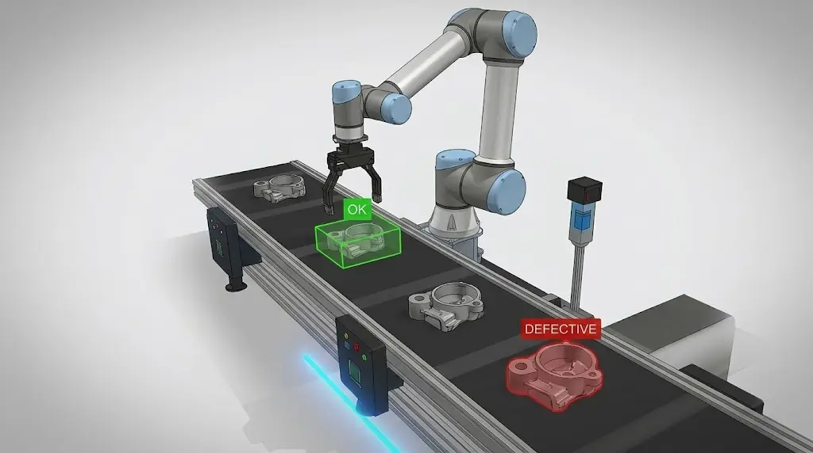

AI Sorting & Digital Twin
A cyber-physical production system that inspects industrial casting parts with a camera and a CNN, decides where each part goes, and moves it with a UR5 robot, mirrored live in a CoppeliaSim digital twin.

Inspection without the human
Manual quality control is slow and depends on how attentive the inspector is. This project replaces it with a fully automated loop: detect defective castings with AI, then sort them without anyone touching the line, following Industry 4.0 ideas.
From camera to pick and place
Each part travels through the same pipeline. Software modules talk to each other over TCP/IP: CoppeliaSim, the MATLAB controller and the Python AI core each have their own port, and an Arduino serial bridge closes the loop with physical feedback.
- CameraCaptures each part on the conveyor.
- Image processingGrayscale, resize to 64x64, convert to a tensor.
- CNN classifierLabels the part as OK or Defective.
- Expert systemTurns the AI decision into a robot action.
- MATLAB controllerOptimization and inverse kinematics for the UR5.
- Pick and placeRobot sorts the part, Arduino HMI shows the result.
Model, rules and motion planning
CNN architecture
Trained with the Adam optimizer, learning rate 0.001 and cross-entropy loss. Evaluated with a confusion matrix, accuracy, precision, recall and F1 score.
Expert system rules
Simple, readable rules sit between the AI and the robot, so the sorting logic can be changed without retraining the model.
Motion optimization
Compared on joint motion cost, energy use, position accuracy, smoothness and computation time.
Operating modes
Auto: sensor-driven, continuous production with no operator.
Manual: editable coordinates for testing and tuning.
Emergency stop: one key safely shuts down every process.
Tools and hardware
AI and vision
Robotics and control
Digital twin
Hardware
Where it came from
Built as a team project for MAE401 Artificial Intelligence at the Faculty of Engineering, Benha University, under the supervision of Dr. Amro Shafik.